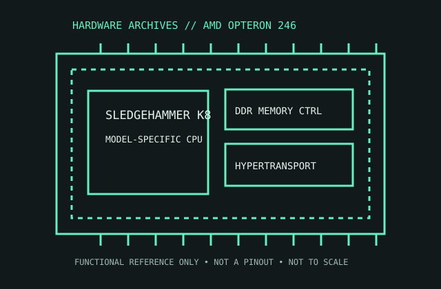

[ SERVER AND WORKSTATION PROCESSORS // IDENTIFIED PROCESSOR ]
AMD Opteron 246
The single-core Opteron 246 represents the first-generation K8 server platform, with AMD64 support and an on-die DDR memory controller.

MODEL IDENTIFICATION: AMD Opteron 246. Compare the printed part number, speed grade, package, cache configuration, and stepping with the cited documentation; do not transfer one variant’s limits to another.
Recorded specifications
| Cataloged part | AMD Opteron 246 |
|---|---|
| Era / family | AMD Opteron 200 series / SledgeHammer, 2003; 246 model, 2.0 GHz. |
| Key specifications | 2.0 GHz single core; 1 MB L2; Socket 940; integrated dual-channel DDR memory controller; HyperTransport links; 89 W TDP for the identified early revision. |
| Interface / fit | Requires Socket 940 server/workstation platform, registered ECC DDR memory, and matching BIOS. Do not substitute Socket 939 desktop Athlon 64 processors or unbuffered DIMMs without explicit board validation. |
| Variant distinction | Opteron 246 is the 2-way-capable 940-pin product; OPN/revision variants may differ in thermal/power details. Confirm the suffix and motherboard’s validated memory population. |
Compatibility and variants
- Requires Socket 940 server/workstation platform, registered ECC DDR memory, and matching BIOS. Do not substitute Socket 939 desktop Athlon 64 processors or unbuffered DIMMs without explicit board validation.
- Opteron 246 is the 2-way-capable 940-pin product; OPN/revision variants may differ in thermal/power details. Confirm the suffix and motherboard’s validated memory population.
- Confirm the system manufacturer’s exact processor support list, firmware minimum, board revision, power/thermal envelope, and memory requirements before installation.
Service and archival notes
Preserve the motherboard, registered DIMM type, BIOS and heatsink details with the CPU. Handle Socket 940 pins carefully; record the exact OPN and do not infer 2P capability from a generic 940 socket listing.
Preserve provenance and a record of the exact marking, condition, tested board/platform, firmware, cooling, memory configuration, and test conditions. Separate published specification limits from observations made on a particular surviving system.
Sources & further reading
- AMD Opteron Processor Model 2 Data Sheet — 200 series / Socket 940Specific model or manufacturer-family reference; verify revision and configuration against the device marking and platform documentation.
- AMD Opteron 246 model identification and OPN cross-referenceSpecific model or manufacturer-family reference; verify revision and configuration against the device marking and platform documentation.
- AMD Opteron launch history and K8 server contextSpecific model or manufacturer-family reference; verify revision and configuration against the device marking and platform documentation.
Third-party reference pages and document archives are finding aids. The matching manufacturer datasheet, product specification, and board support documentation take precedence for the exact revision and host.